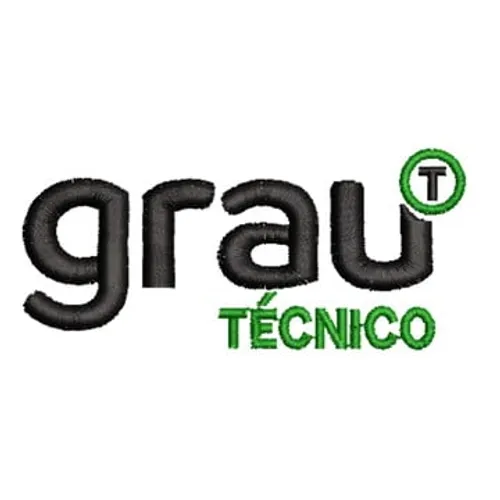

André Almeida
Desenvolvedor em formação
Python • HTML • CSS • JS • Automação
Sou estudante de Ciência da Computação e atualmente curso também o Técnico em Tecnologia da Informação, onde venho desenvolvendo conhecimentos em programação, desenvolvimento web e automação de processos. Tenho experiência com tecnologias como Python, HTML, CSS, JavaScript e banco de dados com SQL e MySQL, além de conceitos de Programação Orientada a Objetos. Também tenho interesse em automação de tarefas utilizando ferramentas como PyAutoGUI. Busco constantemente aplicar esses conhecimentos em projetos práticos para aprimorar minhas habilidades e evoluir como desenvolvedor.

Tenho cursado o Técnico em Tecnologia da Informação no Grau técnico, e atualmente fazendo o curso de Bacharelado em Ciência da Computação na Anhanguera.
ContatoMeus objetivos incluem crescer como desenvolvedor Full Stack, aprender novas tecnologias e contribuir para projetos open source.
Contatoalguns dos meus projetos, onde aplico minhas habilidades e conhecimentos adquiridos durante minha jornada de aprendizado. Esses projetos refletem meu compromisso em aprender e crescer como desenvolvedor, e estou sempre buscando novas oportunidades para expandir meu portfólio e aprimorar minhas habilidades técnicas.